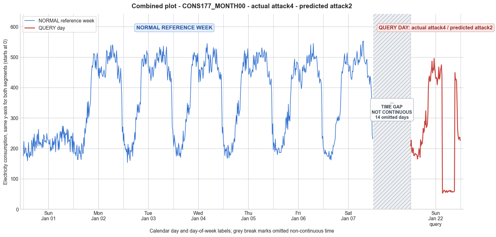

CONS177_MONTH00 · actual attack4 · predicted attack2
- Pair
- CONS177_MONTH00
- GT
- attack4
- Prediction
- attack2
- Binary GT
- attacked
- Binary Prediction
- attacked
- Source
- E010R1
- Parse
- stored
- Date
- 2012-01-22
- Weekday
- Sunday
- Latency
- 1.35 min
- Tokens
- 8028

Final output
Classification: - Manipulated Identified Attack: - Most Likely: Attack 2 - Confidence: High - Reasoning: The query day shows a distinct contiguous block of 24 readings (6 hours) with values between 53.11 and 62.85, far below the normal minimum observed on any reference day (~158.86). The remaining intervals show high consumption consistent with the customer’s typical pattern. This matches Attack 2 (on‑off attack), where consumption samples are replaced with near‑zero (or a constant very low value) for a random duration. Attack 4 (period reduction) would likely preserve some shape of the original load, but the readings here are almost flat. Attack IEEE (intermittent zero intervals scattered across the day) was ruled out because the low period is a single continuous block, not interspersed zeros. Attack_Behavior_Explanation: - How consumption values are manipulated: The attacker replaces the genuine high‑consumption readings with a nearly constant, very low value (≈55–62) during a randomly selected 6‑hour window. This creates a flat, near‑zero segment in an otherwise normal daily profile. - Impact on magnitude and trend: The daily mean drops from the typical ~380 (on similar weekdays) to 253.91. The trend is severely disrupted by the abrupt drop to and rise from the low plateau, altering both the overall shape and the total energy reported. - Possible technical causes: Temporary full meter bypass, false data injection to emit a fixed minimal value, or reverse current/circuit manipulation that prevents the meter from recording actual load during the theft interval.
Prompt
You are a domain expert in smart grid security and electricity theft analysis, with deep knowledge of non-technical loss (NTL) attack patterns in smart meters. You are given: 1. A plot of one week of original (normal) energy consumption for a smart meter, provided as context for the customer's typical consumption behavior. 2. A plot of one day of energy consumption for the same smart meter, which may or may not be manipulated. Below are common attack types, each defined by how consumption values are altered, their impact on magnitude and trend, and their possible technical causes. Attack 0: Generated by replacing all electricity consumption samples with zero values for the entire observation duration. Simulates a scenario where no energy usage is reported at all. May be caused by a total meter bypass or severe meter malfunction. Completely eliminates both the trend and magnitude of the consumption profile. Attack 1: Multiplies the actual energy consumption by a constant random value between (0,1). The lower the factor, the higher the severity. Can be triggered by meter bypass, magnetic interference, reverse current, and false data injection. The consumption trend remains the same but the magnitude is uniformly reduced. Attack 2: Generated by replacing consumption samples with zeros for a random duration. Also known as an on-off attack. Can be caused by full meter bypass, false data injection, and reverse current. Changes both the trend and amplitude. Attack 3: The actual consumption is multiplied by different random factors between 0 and 1, with a unique factor per sample. Similar to Attack 1 but the scaling factor varies per reading. Caused by meter bypass, magnetic interference, and reverse current. Changes both the trend and amplitude. Attack 4: Simulates energy theft over a randomly selected period within the observation window. All measurements in that period are reduced. Caused by meter bypass, magnetic interference, reverse current, and false data injection. Changes both the trend and amplitude. Attack 5: Each sample is replaced by a false value obtained by multiplying the average normal consumption by a random variable between 0 and 1, with a different variable per sample. Caused by false data injection. Produces a completely different pattern from the original consumption profile, changing both trend and magnitude. Attack 6: A random cut-off point is selected and all consumption values above it are replaced by that cut-off value. The attacker avoids exceeding a predefined maximum limit. Mainly caused by false data injection. Changes both the trend and amplitude. Attack 7: A random cut-off point is subtracted from each sample; if the result is negative, zero is reported. Similar to Attack 6 but replaces exceeding values with zero instead of the cut-off point. May be caused by false data injection or total meter bypass. Does not change the trend but reduces overall consumption. Attack 9: All samples are replaced by the average daily energy consumption, resulting in a flat constant profile. Easily detectable because constant consumption does not reflect normal customer behavior. Caused by false data injection. Eliminates all trends. Attack 10: Reverses the consumption pattern without reducing the total amount. Applicable when the electricity company uses time-varying pricing, allowing the attacker to shift high consumption to off-peak periods. Caused by false data injection. Changes the trend without decreasing total consumption. Attack 12: The attacker replaces their consumption pattern with that of a lower-consuming user. The legitimate user unknowingly pays the adversary's electricity bill. Caused by false data injection. Attack IEEE: For each 15-minute interval across the entire day, the consumer either reports the actual electricity consumption or substitutes it with zero. The result is a profile where some intervals reflect real consumption while others are zeroed out, creating an irregular pattern across the full day. May be caused by false data injection. Changes both the trend and amplitude. Given the two plots, determine: 1. Whether the day is attacked or original - compare the flagged day against the normal week and assess whether the consumption pattern is consistent with normal behavior or shows signs of manipulation. If the day is consistent with the customer's typical consumption behavior, classify it as original and provide no further analysis. If manipulation is detected, proceed to point 2. 2. Which attack type this most likely is - identify the single most probable attack and justify your choice based on how the flagged day deviates from the normal week. 3. The behavior of the identified attack - explain how the consumption values are manipulated, their impact on magnitude and trend, and the possible technical causes behind this type of attack. Output Format: Classification: - Original | Manipulated Identified Attack: (fill only if manipulated) - Most Likely: Attack X - Confidence: High | Medium | Low - Reasoning: Why it matches Attack X and why Attack Y and Attack Z were ruled out (list top 2 alternatives considered) Attack_Behavior_Explanation: (fill only if manipulated) - How consumption values are manipulated relative to the normal week - Impact on magnitude and trend - Possible technical causes
Reasoning content
We are asked to determine if the query day is manipulated or original, and if manipulated, identify the attack type. We have text data: reference week of 7 days (Day 0 to Day 6) and a query day (DAY_ID=0) labeled as such but note that it's a different day (dom=21 vs dom=0 in reference week Day 0). The query day statistics show min=53.11, max=495.93, std=149.89, mean=253.91. The reference week days have min around 150-180, max 530-550, mean around 377-389 for days 1-6, but Day 0 of reference week has min=158.86, max=273.93, std=25.37, mean=219.24. So the query day has a much lower mean than days 1-6 but similar to reference week Day 0? Actually query day mean=253.91 vs reference Day 0 mean=219.24. That seems somewhat higher. But we must examine the pattern. The query day has a sudden drop: from reading around 435.85 at index (probably around 62 reading) then 53.11, 55.61, ... up to 60.73, then back to 449.08, etc. So there is a long stretch of very low values (around 50-60) for about 20 readings (from index ~62 to ~83? Let's count: after 435.85, we have 53.11, 55.61, 58.61, 62.85, 61.48, 59.23, 55.36, 59.23, 61.48, 55.98, 56.23, 60.36, 58.86, 60.98, 61.61, 57.48, 61.98, 57.86, 56.11, 58.98, 57.36, 56.98, 57.36, 60.73, then 449.08. That's 24 readings from 53.11 to 60.73, which is a full hour? 15-min intervals, 24 readings = 6 hours. So a 6-hour block of near-zero consumption (around 50-60, which is very low compared to typical values of 200-500). Then it jumps back to high values. This looks like an on-off attack: Attack 2 (replacing samples with zeros for a random duration). But the values are not exactly zero; they are around 53-61. Could be a partial reduction? Attack 2 says "replacing consumption samples with zeros for a random duration". Here they are not zero, but very low. That might be Attack 4: "Simulates energy theft over a randomly selected period within the observation window. All measurements in that period are reduced." Could be a reduction, not to zero. Or Attack 4 description says "reduced", not necessarily to zero. Or maybe it's Attack IEEE: "For each 15-minute interval across the entire day, the consumer either reports the actual electricity consumption or substitutes it with zero. The result is a profile where some intervals reflect real consumption while others are zeroed out, creating an irregular pattern across the full day." That is similar: zeroed out intervals. But here the low values are not zero, they are ~55. It might be that the attacker substituted with a constant low value. But zero substitution is specific. Attack 7: "A random cut-off point is subtracted from each sample; if the result is negative, zero is reported." That would not create a block of low values; it would reduce all values, maybe some go to zero. Attack 6: cut-off replaced by cut-off value. That doesn't fit. Attack 1,3 multiply, not block. Attack 5 replaces with random values based on mean, which would be random, not constant low block. Attack 9 flat constant profile, not this. Attack 10 reversal, not. Attack 12 pattern replacement, not. So the most likely is Attack 2 (on-off) or Attack IEEE, but Attack IEEE says substitute with zero, and here it's not zero. However, Attack 2 says "replacing consumption samples with zeros for a random duration." That also says zeros. But maybe the zero is not absolute zero; it could be a very small value due to noise? Or maybe the attacker replaces with near-zero. The description: "Attack 2: Generated by replacing consumption samples with zeros for a random duration. Also known as an on-off attack." That implies zero. The values in the query day are around 53-61, which might be considered zero-like relative to normal consumption of 200-500? The normal minimums in reference week are around 158-179. So 50 is much lower than any normal minimum. That suggests a period of heavily reduced consumption. This could be Attack 4: "Simulates energy theft over a randomly selected period within the observation window. All measurements in that period are reduced." It says "reduced" without specifying to zero. So maybe reduced by a factor? Attack 4 might multiply by a factor during that period. But the values are very consistent, around 55-61, almost constant low. Attack 4 would reduce, but if it's a reduction by multiplying by a factor between 0 and 1, then the reduced values would still retain the shape of the original load. Here the values are flat around 55, so it's likely a constant replacement, like Attack 2 with a non-zero constant. Or Attack 5: "Each sample is replaced by a false value obtained by multiplying the average normal consumption by a random variable between 0 and 1, with a different variable per sample." That would produce random values around a fraction of average normal consumption. The average normal consumption for this meter? For reference week Day 0 mean is 219.24, but days 1-6 mean ~380-389. So a random 0-1 times average would yield values between 0 and ~380. But these low values are quite low (55/380 ~0.14), random could produce that, but they are not random; they are nearly constant. So unlikely. Attack 2 typically zeros out. But sometimes on-off attacks might set a fixed low value. Given the exact zero phrase, maybe it's not exact zero but any very low value. The plot might show zero, but the text says the values are 53.11 etc. Possibly the meter has a minimum non-zero reading or some noise. Could be an attack that substitutes with a very low constant. None of the listed attacks exactly fit a constant low block. Attack 9 is constant average, not block. Attack 12 is pattern replacement. So the closest is Attack 2 (on-off with zero replaced by near-zero) or Attack 4 (reduced over a period). Let's examine Attack 4's definition: "Simulates energy theft over a randomly selected period within the observation window. All measurements in that period are reduced." How reduced? It doesn't specify method, but typically reduced by a factor. So it would still have some variation. The query values are almost constant: 53.11, 55.61, 58.61, 62.85, 61.48, 59.23, 55.36, 59.23, 61.48, 55.98, 56.23, 60.36, 58.86, 60.98, 61.61, 57.48, 61.98, 57.86, 56.11, 58.98, 57.36, 56.98, 57.36, 60.73. The variation is minimal, range 53.11 to 62.85, which is a small fluctuation, possibly due to some noise or a small underlying pattern. That looks like a flat line near 58. So it's a constant low value block. That is characteristic of an on-off attack where the attacker replaces with a constant (maybe zero but meters report a minimum value, or a fixed low value to avoid detection). Given the description, Attack 2 is the most explicit for on-off. Attack IEEE also has zeros but across the whole day, not a contiguous block. Here it's one contiguous block (from index ~62 to ~83, 24 readings). That's a single duration, not scattered intervals. So Attack 2 fits better: on-off attack with a single random duration of zeros (or near-zero). Attack IEEE would have many zero intervals interspersed. So I'd classify as Attack 2. Confidence: High, because the pattern is a clear block of extremely low consumption, distinct from normal variation. Alternatives: Attack 4 (partial reduction over a period) could produce a low block but might retain shape; here shape is lost. Attack IEEE would produce multiple zero intervals, not one contiguous block. So Attack 2 is most likely. So output: Classification: Manipulated Identified Attack: - Most Likely: Attack 2 - Confidence: High - Reasoning: The query day shows a contiguous 6-hour block where consumption drops to ~53-62, far below any normal minimum (~159), while the rest of the day matches typical high consumption patterns. This matches Attack 2 (on-off attack) where samples are replaced with near-zero values for a random duration. Attack 4 (period reduction) would likely retain some consumption shape; the near-constant low values indicate replacement rather than scaling. Attack IEEE (scattered zero intervals) is ruled out because zeros are not present and the low period is a single block, not scattered. Attack_Behavior_Explanation: - How consumption values are manipulated: The attacker replaces the genuine consumption readings with near-zero values (or a constant very low value) for a continuous period of several hours, likely by switching the meter connection off or injecting false data to report minimal usage during that window. - Impact on magnitude and trend: The overall daily mean is reduced (253.91 vs ~380 on similar weekdays) due to the low block. The trend is disrupted: the consumption pattern shows an abrupt drop and rise, creating an unnatural flat segment, thus altering both trend and magnitude. - Possible technical causes: Full meter bypass (temporarily disconnecting the meter), false data injection to emit low constant readings, or reverse current to cancel recording.